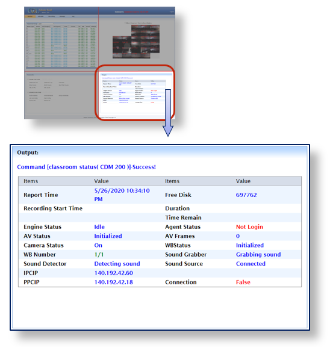

Displays status of the command that the user executes. Default value is selected classroom’s details.
- ❖ Various details are been displayed on the output Screen on class selection they are as below
- ► Report Time: Gives the current date and time of selection.
- ► Free Disk: Gives information of remaining disk space in Production PC (PPC).
- ► Recording Start Time: Displays at what time recording has been started.
- ► Duration: Displays time elapsed after recording began
- ► Time Remain: Displays time remaining for recording to end
- ► Engine Status: Shows current COL Engine (PPC) status (listed below).
- ► Idle: same as IDLE PPC(Engine) section.
- ► Recording a Lecture: same as RECO under PPC(Engine) section
- ► Processing data: same as PROC under PPC(Engine) section.
- ► Uploading: same as UPLO under PPC(Engine) section.
- ► Engineoffline: same as ENGINEOFFLINE under PPC(Engine) section
- Click here on PPC(Engine) Section on Classroom Group Page For more Details.
- ► Agent Status: Shows the current COL Agent status (listed below).
- ► Idle: same as IDLE under IPC (Agent) section
- ► Not Login: same as IPC LOGGED OFF under IPC (Agent) section.
- ► OFF: same as AGENTOFFLINE under IPC (Agent) section
- Click here on IPC(Agent) Section on Classroom Group Page For more Details.
- ► AV Status: Audio-video feedback status (Initialized - ON).
- ► AV Frames: Gives details of the number of frames recorded.
- ► Camera Status: Selected class video feedback status
- ON: Receiving video feedback from the camera
- OFF: No video feedback due to some issues
- ► WB Number: Displays number and status of mimio devices in the selected classroom, in the format: No. of detected mimio devices/Total no. of installed mimio devices.
- 1/1: Classroom has 1 mimio device installed and it is being detected.
- 2/2: Classroom has 2 mimio devices installed and both are detected.
- 0/1: Out of 1 device, none are detected.
- 1/2: Out of 2 devices, only 1 is detected.
- 0/2: Out of 2, none are detected
- ► WB Status : Provides status of whiteboard (mimio).
- No recording: Initialized
- During recording: Capturing whiteboard – WB1 x events, WB2 y events
- ► Sound Detector: Provides information about audio feedback from the classroom.
- ► Sound Grabber: Grabber always detecting sound from the microphone to check the status of it.
- ► Sound Source: Gives status whether sound capturing device (microphones) is connected or not.
- ► IPCIP: Provides Instructor PC (IPC) IP address
- ► PPCIP: Provides Production PC (PPC) IP address
- ► Connection: Displays the status of whether the has a connection with PPC or not.
- True: Connection established between Instructor PC (IPC) & Production PC (PPC)
- False: No Connection between Instructor PC (IPC) & Production PC (PPC).